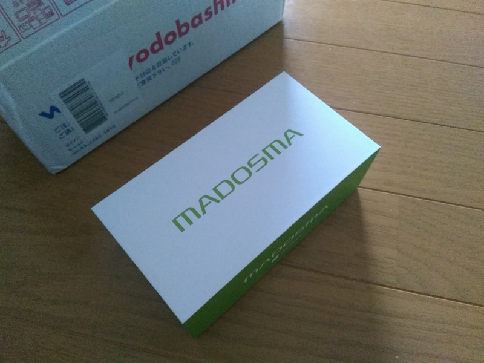
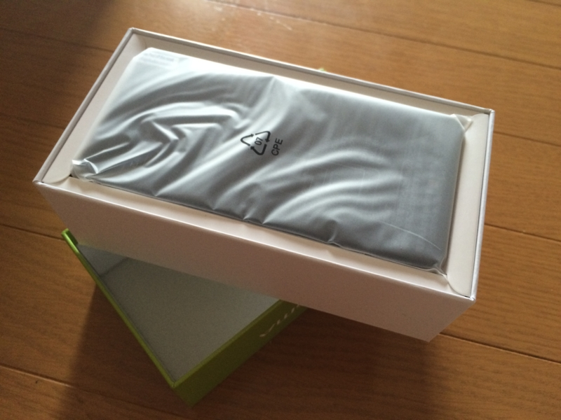
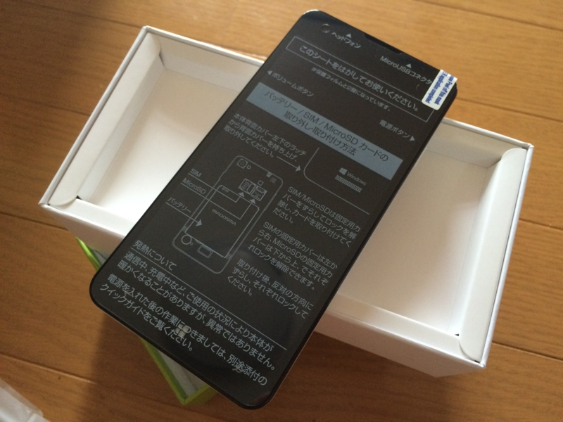
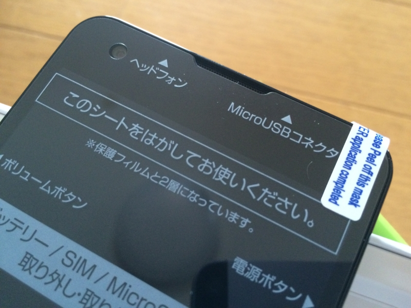
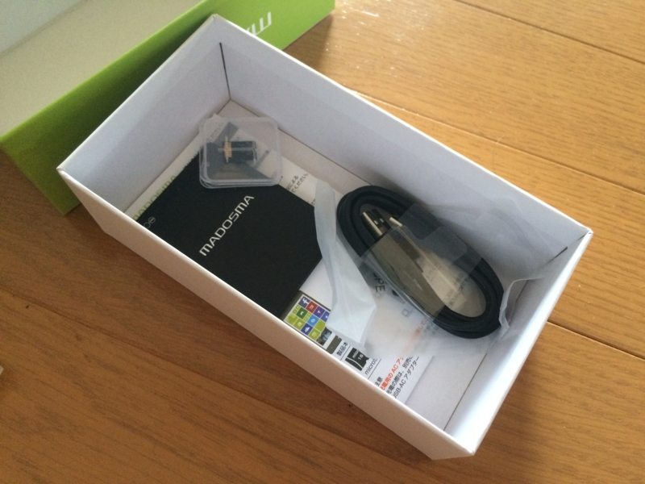
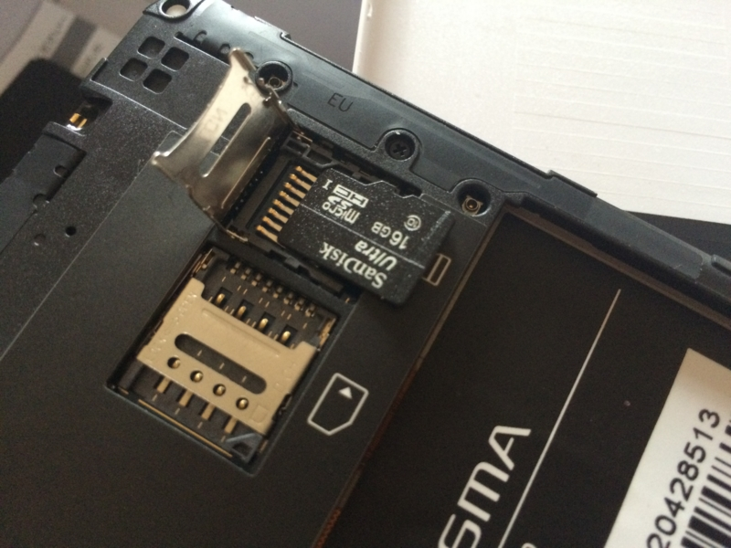

懺悔：MADOSMA 買いました。
公開日：

ぶっちゃけ、買うつもりはなかったんだよな。値段みても今メインで使っている Nexus 6 に勝るとは思えないし、初物は地雷尽くしだというし。しかも Windows 10 の発表を目前にしたこの時期、もう少し待って、せめて対応状況だけでも確認して買う方がよっぽど賢いと思う。
にもかかわらず、愚かにも買ってしまったのは、4年ぶりの Windows Phone 発売を寿ぎたくなったから。
— いっちゅう＠ポチテロ (@icchu) 2015, 6月 18こういう“狂信者の塔”を作っちゃう人たちの熱気にあてられてね。誰もビビッて足を踏み出せなかったなか、あえて火中の栗を拾おうとしたマウスコンピューターの漢気を買いたいと思ったのもある。
まぁ、ね、万が一初期不良で祭りになったとしても、買わなかったひとはそれにすら参加できないわけで！ そういう時間、あとから振り返ればきっとプライスレス。たとえ、残り半月を卵かけご飯で過ごすことになろうともね。
冷静に考えれば、ほんとバカなことをしたもんだと思うけど（みんなは Windows 10 のタイミングまで待った方がいいと思うよ！）、買ったからにはせめて何かアプリでも作って有効活用したい。

MouseComputer MADOSMA Q501-WH ホワイト WindowsPhone SIMフリー
- 出版社/メーカー: MouseComputer
- メディア: エレクトロニクス
- この商品を含むブログ (1件) を見る
開封の儀

とくに感想もなく。自分の観測範囲では、Twitter のタイムラインの半分ぐらいは MADOSMA を買っているはずなので、そういう人たちのブログを読んだ方が詳しくていいと思う。
強いて言えば、最初からフィルムが貼ってあるのがいいな。こういうの、自分でちゃんと貼れたためしがないから。あと、16GB の SD カードがついていた。うまく使えば内蔵ストレージの貧弱さは十分に補えそう。
正直なところ iPhone みたいに他人に見せて自慢できる類のモノではけっしてないが、軽くてよく手に馴染み、必要にして十分な感じがする。
おでコン、なに作ろうかなぁ。